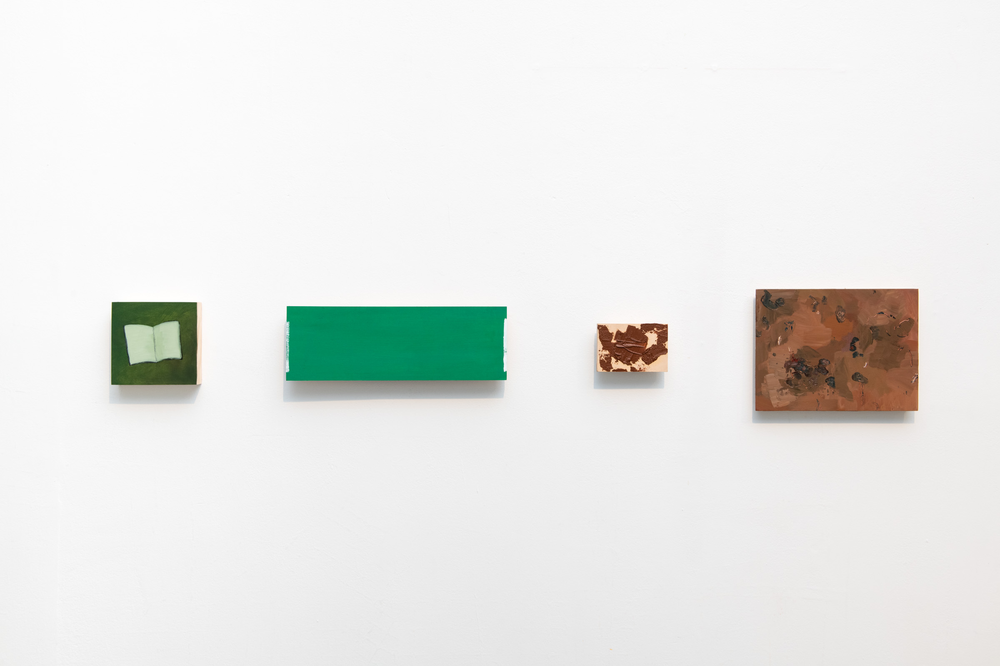
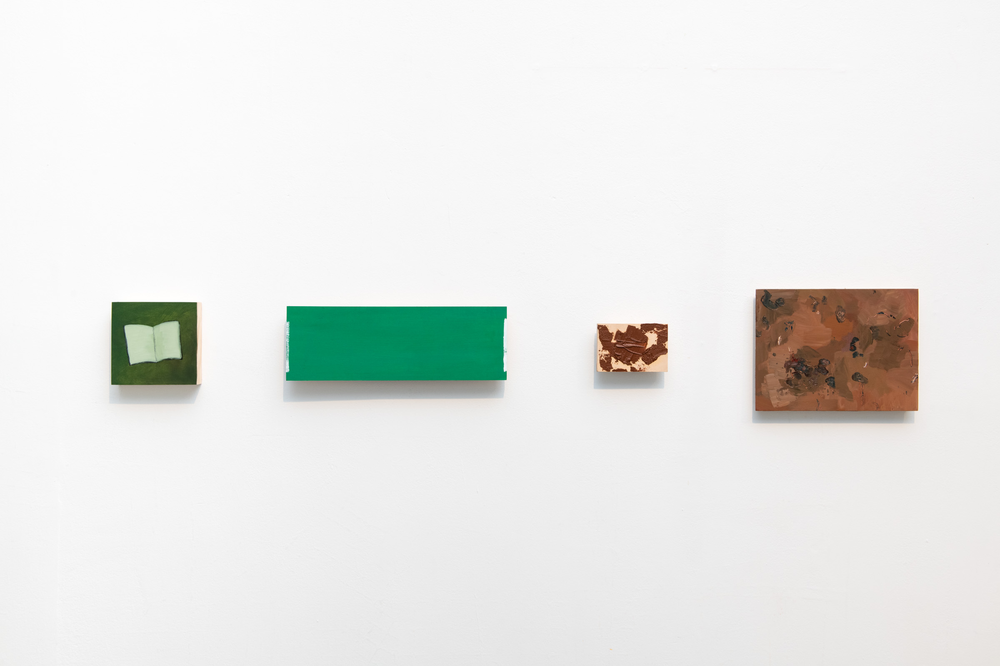
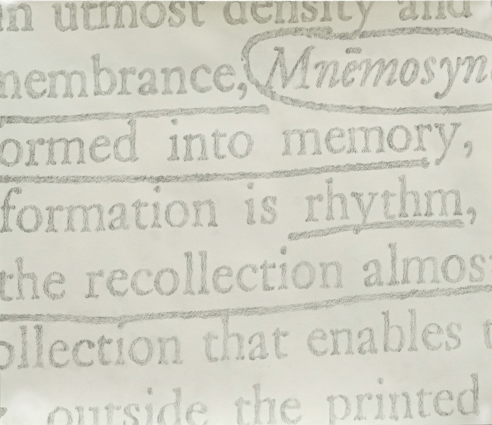
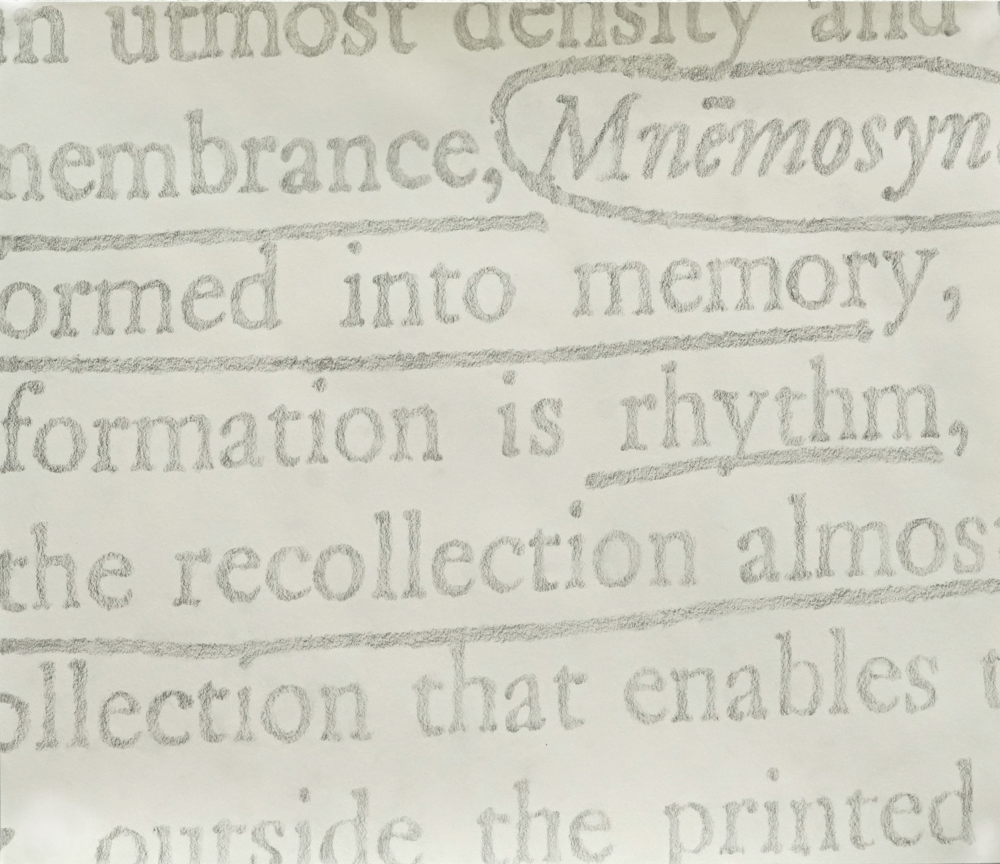

persimmon, chipmunk, hickory, squash
Solo exhibition at the Al Held Foundation. Paintings and radio piece. 2024.


Country (10 minute sample of radio piece)
Persimmon, chipmunk, hickory, squash, moose, opossum, caribou.
Words taken from Algonquian languages populate the vernacular of the American landscape. They condition the designatory and descriptive capacity of American English in relation to the environs which it came to dominate as the lingua franca of enclosure. Words like these, of flora and fauna, bear a more complete assimilation than the Native words and names typically reserved for street signs, cities, states, and infrastructure. Those are different kinds of landscape words. Taconic, Seekonk, Connecticut, Massachusetts, and the like.
Here, there are persimmons, chipmunks, hickory, squash, moose, opossum, and caribou: both vegetation and animal. But these rest on the strata of minerals beneath our feet. Rocks crushed, overturned, buried deep, and fortified. Their names mean obduracy. Yet, as architecture, comprising buildings and walls, they enunciate the enduring but fragile physicality of property relations. The divergence between land and its overdetermination by capital expands in this interplay between figure and ground.
- L.E.
PDF of booklet published with exhibition.This exhibition was supported by the Al Held archive fellowship during the 2023-2024 year.
Stay
Video, 6 minutes. 2023.


Stills from video
A Jewish grandmother displaced from Tripoli, Libya, remembers a song from her youth and sings it to her grandchild over a video call.
"I recognize the mountains."
Mixed media installation in group show "Stage Presence" at Bard College. 60 minutes of sound. 2023.


Audio documentation of installation (excerpt)
"I recognize the mountains." is on the one hand a version of the sh'ma and on the other hand an impressionistic portrait of two voices marked by the twentieth century. It queries the possibilities and limits of transmission, taking place within an envelope of possibility opened up through the passing of time, physical distance, and intergenerational encounter.
The weight of stones / the way in which winter / pushes up / these stones from the earth, / in fields / perpetually cleared
Oil paintings in group show "Stage Presence" at Bard College. 2023.
 


Stones, "fields," street signs, bricks, and textual remnants animate these paintings. Throughout New England, colonial practices have scarred the land in ways integrated and obscured by the romantic American visual regime. Fieldstone walls, for example, are a byproduct of colonial agriculture and property law. When colonists encroached on native land and cleared fields for English-style agriculture and settlement, stone walls accumulated at their margins. Each winter, water penetrated the loosened earth and froze, heaving new stones to the surface, so that the fields needed to be cleared perpetually. These stones, lifted against gravity, remain on the surface, patterning the landscape with romanticized indices of labor and the slow violence of colonial agriculture. Empty fields rhyme with empty green highway signs, which around here are so often marked with transliterated Algonquian words.
"One hearing or a century of hearings?"
Sculptures and sound installation. 30 minutes of sound. 2022.


Audio documentation of installation (excerpt)
“A goodly pine tree of 80 foot long was reared up, with a pair of buck’s horns nailed on somewhat near unto the top of it; where it stood a fair sea-mark for directions, how to find out the way to Mine Host of Ma-re Mount.”
-Thomas Morton, 1637
A Threshold Dance
Drawings, sculptures, and sound installation. 2021.
 



Audio documentation of installation (20 minute excerpt)
Carnival's Quarrel with Lent
CD released on edition wandelweiser. 2021. Listen.


“Carnival’s Quarrel with Lent '' was written for the slide whistle, a comic instrument that’s easy to play and well-suited for an ironic critique of chamber music. Four sequential pieces are recorded idiosyncratically to reflect different conceptual aims and changing socio-economic conditions.
I revive a jongleur figure in the opening and closing sections of the record, which take place in the skeletal remains of a public sphere. In these parts I execute a long glissando without blowing air into the whistle. (The music is constructed with the ambient energy resonating within the whistle’s expanding and contracting column of air.) Site is central to these recordings. I realized the first section on a street corner in Queens, NY, as the first wave of the COVID-19 pandemic ebbed in June 2020. The whistle amplifies fireworks, near and far; passing cars and mobile sound systems; the rustling of foliage; and an expectant tension redolent with joy and fear. The companion glissando was recorded November 7 in Washington Square Park, just after the 2020 presidential election. The dominant sound here is noise, which pulls the glissando into sharper relief. There is a massive cacophony of voices, tenuously coincident in celebratory articulation in spite of vastly different interests and experiences. While the glissando lends a rising motion to the first piece, it falls here, deflating like a balloon and capturing my own ambivalent identification with the chaotic, jubilant affect that saturates the air.
Filtration is an ambivalent process in sound. A filter emphasizes particular frequencies, pulling these into the foreground, but filtration can also be considered in terms of attenuation. A filtering out. This elliptical quality of filters, in which negative space highlights the contours of a lens as much as the subject brought into focus, generates a multiplicity of meanings. These pieces are loosely inspired by an anecdote told by Akio Suzuki, in which his father plays a melody on the flute using only his fingers.
In the quintets, five voices converge and diverge as they sing through the microtonal range of the slide whistle, yielding a tapestry of beating tones. While each part is identical, the players proceed at their own pace, not unlike Morton Feldman’s “Two Pianos.” One quintet was recorded in spring quarantine, and the second en plein air during the winter.
Tracks:
1 glissando i
2 quintet i
3 quintet ii
4 glissando ii
composer: eli neuman-hammond
players: eli neuman-hammond (slide whistle); ella heron (slide whistle); sophia o’brien-udry (slide whistle); story ponvert (slide whistle); matthew tuggle (slide whistle)
recording, mixing: eli neuman-hammond
mastering: jack callahan
executive producer: antoine beuger
layout: daniel bechem, mess media, berlin
printed by: das druckhaus, korschenbroich
Sanded recording of a decade
Audio file presented by Non-Event. 2020. Listen.
“To have a definite beginning and a definite, predictable end is the
mark of fabrication, which through this characteristic alone
distinguishes itself from all other human activities. Labor, caught in
the cyclical movement of the body’s life process, has neither
beginning nor an end.”
-Hannah Arendt, “Work” in The Human
Condition
It's a recording of me sanding down a small wooden object. This is only one short document of a ten-year period I spent working intermittently on this object- even though in musical terms, 40-minutes might be considered a long duration. While sanding this piece of wood, I was thinking about "work" in Hannah Arendt's sense of human activity directed towards particular ends, which become concrete aspects of the world; i.e. tables, chairs, buildings, etc.. I was just mulling this over while sanding this fork, and thought that it would be good to record for a while, since the sounds are integral to the aesthetics of work, in which the mind is circumscribed briefly to a very small activity whose residue is a distinct form. It strikes me as a very musical activity, this sanding and forming. The rhythms and resonance of the wood, and especially the breaks in the activity, where I quietly (invisibly) contemplate where to sand further (towards an image), or leave the room to pursue some different activity. Overall, I began to interpret the sounds as a pretty informative or at least musically interesting palimpsest of this work-oriented thought, more accurate to its contours than the wooden object that is its result.
Road Sounds
CD, self-released. 2019. Listen.

“The sound of a car door slamming was not a sound. It was the sound of a car door slamming, and once you accepted this, you had to ask: Whose car? What kind of car? Where is this car? What color is the car?”
- Jim O’Rourke, speaking of Luc Ferrari
There’s a circumference, a median, a bridge. Before they patch up last winter’s potholes, they must internalize an idea of speed. Flat surfaces are integral to capitalism's geometry. There are parking lots, and there’s also the open road (an oxymoron). “Maximum circulation coincides with maximum control.” There are echoes, then inundations. The circumference falters, but expands into your perceptual space. You warm up, shuffling around ambience. The highway prefers haphazard plateaus to sleep. Distant machinations become intimate in the most unexpected and direct ways. The horn continues, you turn on the radio.
Road Sounds began as a “sonic ethnography” of transportation infrastructure in New England. Here it takes a different form. I think of this as my road journal, an impressionistic register of speed as formalized in material and ideological technologies of transportation. The recordings are uncut and unprocessed. This is not to say that they are objective documents, only that they present durations of time, rather than objects of sound. These are descriptive documents, whose composition runs parallel to specific flows and events. There are no soundscapes, there is no immersion: just a few opportunities to listen to something.
Tracks:
1 Approaching That Which Does Not Sleep, Part 1
2 Space 1, I-95 Median in Attleboro
3 Approaching That Which Does Not Sleep, Part 2
4 Space 2, Parking Garage in Salem, Activated by a Horn
5 Approaching That Which Does Not Sleep, Part 3
6 Car Parts Cooling at Different Rates in Jamestown
7 Space 3, Platform in Providence
Mastered by Taku Unami.
This project was originally my undergraduate thesis. Gruenrekorder published a modified version of this essay, along with an excerpt of the album, as part of their online magazine Field Notes.
Inaudible sounds
Writing/score. 2019.
Then the hail came with the dark, setting up a staccato drumming on the corrugated metal roof.
The silence and the shadow hung around us. Away off in the country silence beyond the barracks walls there was one tiny edge of sound, a handsaw keening: nothing else.
It feels like she has had an experience of some kind, that something’s got into her, making her tense on the inside like a string on a musical instrument, causing her to make a clean sound, inaudible to anyone. A quiet sound, meant just for her body -- a short-lived concert in a brittle acoustical shell.
He began to rise from the toilet into something awful, into a new sound, into the rising decibels of the woman screaming from the living room.
Once it goes out of tune, she thought, it takes a long time to readjust the quiet to the sound of me.
Continuously, with no pause, a hissing mutter fills the air, so huge and so long a sound that one cannot hear it when one stops to listen; yet it fills all the interstices of one's being.
A noise like sudden rain.
Catching the Voice of America through the crackling of the jamming static. I still remember that beautiful crackling.
But there was no longer any life in his belly, and his voice sounded thin like the creaking of ice.
the mechanical cacophony drowns out their conversation.
A reverberating collision and a sea-sick feeling at once.
He listens intently, as though for a special sound or as though he were drawing out a note of particular merit to him
Lace curtains, fixed with drawing pins, blocked her view into rooms in which she could hear, along every block, televisions blasting.
the question was resonating like a profound but untimely silence that should be broken for the sake of politeness
A marvelous distance floods her euphoric ears
quiet's familiar warp
And the noise, of course: ever-present. She shut the window.
They slide up and down the stem in knots, hissing quietly, together a symphony that sounds of the sea, or cars rushing over the freeway late at light
The keystone of the arch goes up past him in its sling, is raised, settled, and fitted almost soundlessly, great ton-weight block though it is, into the gap between the two piers, making them one, one thing, an arch.
The wall of a tent leans up over my face, not visible but audible, a slanting plane of faint sound: the susurrus of blown snow. Nothing can be seen.
the motor's roar is deafening, and yet after just a moment the brain grows accustomed, as it does in the winter to thick clothing that separates the body from the rest of the world.
There were more than a hundred people clustered around the park entrance now, and they began to chatter in a rising polyphonous clamor.
We heard at the far end of the garden, not the copious high-pitched bell that drenched, that deafened in passing with it's ferruginous, icy, inexhaustible noise any person in the household who set it off by coming in "without ringing," but the shy, oval, double tinkling of the little visitors' bell
Their talk and laughter bounced strangely off the tiles walls, an insane barrage of fragmentary noises.
Sounds have curled up inside themselves, withdrawn their snail's eyes; the orchestra of the world has departed, vanishing into the park.
the sound is long, mournful, like the voice of an animal. Then it stops, shattered into cicadas' small echoes.
the sound of the wind seems the sound of the wind that blows there.
In the concentrated quiet, all his sense became a listening, and he, a moving prayer.
Field recordings
Writing/score. 2019.
A wash in the distance. It sounds like a quiet stream dancing on top
of the river beneath it. A large brushing expands outwards from the
green to my left. Points suddenly illuminate everything around me. I
need to move.
Underneath now, cascading white and translucent sheets fall
everywhere. Except, I am distinctly below and behind, or in front of
them. Thus their texture is available to me differently from this
distance, or intimate shelter. Arhythmically a piece of metal sings,
and the sheets expand into massive, soft shapes that ring out
everywhere in a din. Muffled amplified passages occupy the stones and
architectural copper that encloses my ears. Steadying, and unyielding.
The noise begins to hide in the mortar of my imagination, both
receding and seeping in everywhere. Its color is less white now,
approaching a quiet shade of blue, or a low pellucid plane atop a
green field. The scent of rose petals cuts through the noisy mist. The
inflowing torrent reverberates and settles between the floor and the
ceiling. Who knows when it will end.
3:01-3:14 pm
June 4, 2021
Washed out and grey hum. Breathy like an interminable exhale. Shuffling dots the room, "I was never here." Crackling brittle paper. Muted tapping on the hollow desk met with rubber. Pasted together formants. "What you working on?" Children in the space outside the room. "I was never here." Folding paper. Bang. Click, clock, stop. Shuffle. "More, more." "I'm tired." Hard and reflective walls cloister and inflame each sound. Squealing hinge echoes through the door. Whispered little section of the room.
1:37-1:44 pm
May 18, 2021
There is a space around me, and outside, through the window, as well as beside me in the next room over. Additionally, there are the spaces before, and after. A little drummer keeps time outside, as well as reggaeton seeping into the alleyway onto which my window opens, from some passing car. The drip outside taps persistently, atop a cloud of fledglings sparkling in a higher register. Near silent footsteps address the floor as Werner the cat walks through the door and onto my bed, where I sit. I’m reminded of the dog, Ozzie, who breathes very lightly behind me, occasionally wheezing and readjusting his resting position with a shuffle. There is a cooing morning dove, in seeming conversation with the white, damp sky. My roommate Malcolm issues an occasional sniffle, alerting me to the nature of the space outside my door. The drumming pattern, on some resonant surface of wood or plastic or metal, continues. A sweet-sounding tone arrives unexpectedly. At first from outside--but, no, it’s from the room through the door. It seems to be music, inexplicably sourced. The room I am in is quiet. The birds’ chatter and the dove’s lamenting song seem to fill the air here, from outside. The dripping water, on the other hand, falls clearly on the other side of the open window. At last I remember the pencil, scratching out on the page in the notebook. And the voice in my head, irrupting in silence.
11:43-11:56 am
April 11, 2021
To my left, a soft, grey sound. Occasional silences, which interrupt a patchwork of low-fidelity recordings emitted from speakers at the front of the room, towards my right. Gurgling.
January, 2021
a fan moves the air slightly, its inaudibility accentuating total motion. When the air does not impact the nerve curled inside the cochlea, or my bared thigh and ass, it assumes the shape of a vessel, flirting alternately with the walls and my skin. The winds on the other hand are relatively anti-social, batting my eyelids shut, piling on in sheets so as to obscure their provenance, bursting as they do on a whim when the pressure shifts, imparting little save brute direction and windburn.
2:08 pm
October 1, 2020
Crying tickling gushing undivided mass. Trinkets from some other place, formants made into unfamiliar patterns. Su, su. La la la la la blah. Occasional translations. Or breaches. Horn -sneeze- from the reflective basin. A mass that holds the loud and far travelling sound. Intimate and clumsy wind. Careless with fine frequencies, all smushed together until the grass tips slightly. Sniffling sniffle. Scratching. Somewhere at the circumference a thin border of overlapping chatter.
1:49-1:54 pm
September 14, 2020
The whirring, indistinct as though scratched. Suddenly a duck. Then another, diminished sequence. Dim through the glass. Perhaps a ripple. Everything a surface etched by the noise above me. Symetrical and warm, periodic breathing near my feet. In concert, the breath beneath my hands, rising and falling each voice sliced - more quacking - by the lateral - a gust of wind, high sheets rearranging below - woosh. The sticky tongue by my feet lubricates the upper end of the spectrum, each lick an ornament to the nearly imperceptible tumult that engulfs the room.
July, 2020
A small purring confused with the air outside, given away by its regular rhythm, whittling away at the sign of life. Saturated air, crosshatched by domestic drips and substrata. The door slicing through this medium, language and measures of distance seeping in before the sluice gate creeks shut. A melodious dim chord, quaking impacts. The chord, suffering through planes and airs, each taking their tribute. Cyclic metallic raps duet with the leak in the sink. Quacking, through the windows; metonym for the anarchic quiet outside.
1:09-1:19 pm
June 17, 2020
A high uneven whirring and a tumultuous growl resides behind. Mixed with almost a cranking. The first floating to the left, very quietly. Mild friction crunches between the hands and the book on the desk. The whirring persists as does the quiet digestive growl. From this slate a machine carves a chord, beginning with a small click and establishing itself. First the low dimensions, which then massage out a hovering whine. This whine oscillates between something sine-ish and a slightly more complex harmonic tone. The sine wave disappears and then emerges periodically-- proportionate to a wave lapping the shore. There are the edges of breath just in front. Two small drips round off in the distance. The windows are silent and bright. Minor tremors emerge from the phone in my hands on the book, coordinating with cognitive activity. Crack in the bone in the wrist. The sine wave laps. The chord continues furtively. It has drowned the growl and the whirring now beyond the pale of audibility. A scratchy nasal inhale and warm sigh. Two minor chirps filtered by glass. Creaking friction between the jacket underneath and the weight of the body adjusting itself. Low muffled fart. Tremors continue near the hand. The sine-ish wave changes in character when it reaches its apex, warbling slightly.
11:21-11:34 am
March 11, 2020
Description
Score. 2019.

“Can a listener feel that they have any dignity when the values of music are registered against “ideals”? After all, the work and the joy of listening are in the internal refraction between what is and what is imagined. And there ain’t no respect in a prefigured imaginary.”
-Tony Conrad, “Slapping Pythagoras”
Working together, our senses and imagination massage sound into coherent forms. In this poem, we meet two voices, two streams of language, triangulated by some distant point beyond the misty horizon.
This might be a model for sociable music.
The reciever parses between two dispatches from...

Or it could be a model of transduction, in which an aesthetic experience is converted simultaneously into language and sound, which in turn generates new aesthetic experiences for the audience. This situation is enriched when a second narrator joins. Two instances of transduction bring the audience deeper into the fold, forcing new questions upon their ears… Suddenly there is a voice that verifies the other—yet it forks away, adhering to different rhythms, revealing and further obscuring the contours of a space no longer present. When two people speak, and a third listens to their accounts, a question emerges in finer detail: how is it that we hear, and what is it that we hear, when we listen closely with something or someone?
16 Recordings of Ephemeral Percussion Ensembles
Audio files released by and/OAR. 2019. Listen.

Plows and shovels move snow all winter, making inadvertent monuments to the cold that outlast the season and store energy for a thermal exchange when the right conditions are met. When it finally warms, quiet assemblages spring into motion for a few fleeting days, as snowmelt trickles down eaves, gutters, pallets, sidewalks. I made most of these recordings on such a day in Providence, Rhode Island, when most of our winter snow melted.
Unlike an urban rainstorm, whose din emerges ubiquitously, these trickles occur in isolated pockets. The rain cloud hovers impartially above the city, but ice has coordinates. It is intimate with the forms and surfaces of the city; it articulates the city as it melts. These apparently natural water sounds are thus intensely cultured; they emerge unexpectedly along the contours of the urban environment, which localize the water into many small "ensembles.”
With this musically-inflected metaphor I hope to underscore how these recordings oscillate between musical and documentary aesthetics, a tension uniquely brought forth by recording technologies. As with the microscope, a microphone brings matter nearer to us at the same time as it abstracts it into artificial relations with our senses. It describes and it argues. Vibrations are headily amplified when they pass between kinetic and electric media. And yet waveforms are contoured by events in the world, in fact become contours of events, even as they fly away from them-- towards music, for instance.
Recorded in Providence, Rhode Island in Spring 2019
Tracks:
1 Ensemble 1 (Initial Yard)
2 Ensemble 2 (Slouching Child)
3 Ensemble 3 (Bird Accompanies)
4 Ensemble 4 (Non-Shimmer)
5 Ensemble 5 (Different Surfaces)
6 Ensemble 6 (Pointy Steps)
7 Ensemble 7 (Weird Stereo)
8 Ensemble 8 (Drum Solo)
9 Ensemble 9 (Altitude, Windblown Panning)
10 Ensemble 10 (Subdued with Large Plane)
11 Ensemble 11 (Snow Cave)
12 Ensemble 12 (Muffled, Woody)
13 Ensemble 13 (Very Mysterious)
14 Ensemble 14 (Conversational)
15 Ensemble 15 (Polymetric Variations, Noisy Highway Floor)
16 Ensemble 16 (Lovely)
Mastered by Luke Moldof